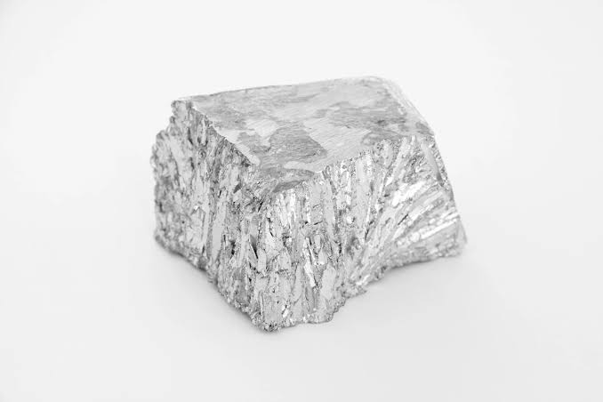
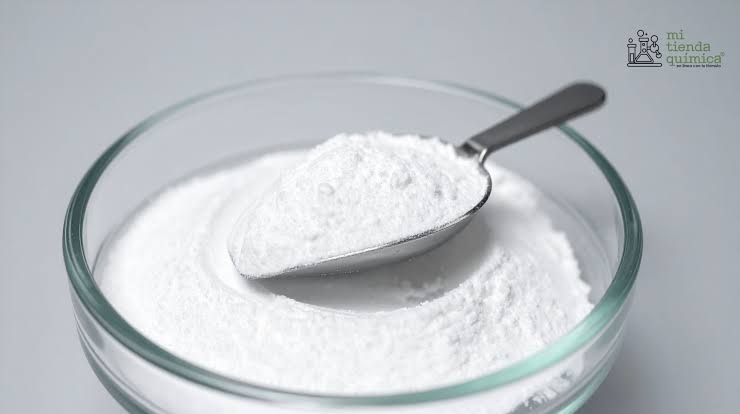

¿Qué es el Zinc?

El zinc es un metal moderadamente reactivo, de color blanco azulado, que se oxida fácilmente al aire para formar una capa protectora superficial. Es sumamente versátil en la industria metalúrgica y esencial para la biología.
Ficha Técnica
- Símbolo Químico: Zn
- Número Atómico: 30
- Grupo y Período: Grupo 12, Período 4
- Punto de Fusión: 419.5 °C
- Estado Físico: Sólido
Usos Principales e Importancia

Su aplicación más famosa es el galvanizado, un proceso donde se recubre el acero o hierro con una capa de zinc para protegerlo totalmente de la oxidación y el óxido (muy usado en construcción y techos). También es clave en la fabricación de aleaciones como el latón y en suplementos nutricionales.